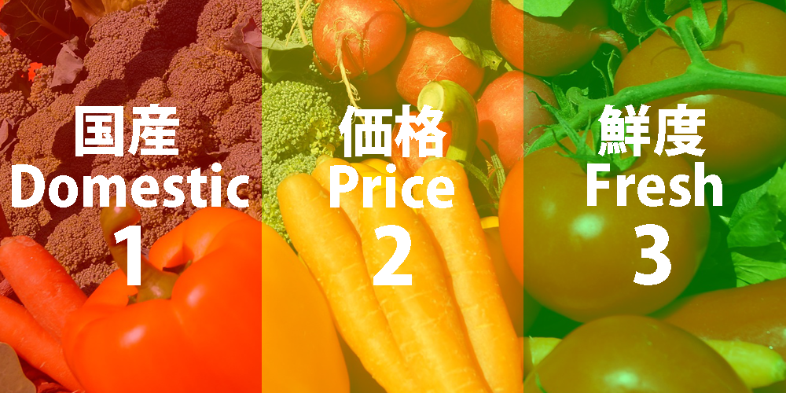

国産の野菜を安く新鮮にお客様に届けたいというコンセプトと
わたしたちの思いでベジドットは誕生しました。
そんなベジドットには３つのこだわりがあります。
国産、価格、鮮度です。
そんな3つのこだわりを紹介していきたいと思います。
1：国産にこだわる理由
食品の安全性を考えるとなるべく国産の野菜、その中でも低農薬・無農薬の野菜を
選んでいただきたいというのが我が社の本音です。
海外産でも色つや、形が良かったり、美味しそうな野菜もたくさん手に入るようになりました。
しかし、基準値を超える残留農薬の数値が出ていたり、遺伝子組み換えの野菜が出回っていたりします。
そんな問題を解決するべく我が社では北海道の広大な土地を使った自社農場、全国の協力農家さんの方に
よってできるだけ農薬を使用しない、又は完全に使用しない野菜の生産を行うことができています。
おかげさまで味や栄養はバツグン。ベジドットの野菜は美味しい！というお声も沢山いただいております。
2：価格にこだわる理由
国産そして低農薬・無農薬ともなればどうしても生産コストが高くなってしまいます。
なぜこの安さを実現できているのか、それは自社農場、協力農家さんのお力によって実現することが
可能になっています。
自社農場では、高齢化によって農地を維持できなくなってしまった方から土地をお譲りいただき、その土地で
低農薬、無農薬の野菜を少しでも多く生産できるように努めています。
※2019年現在ではじゃがいもの農地拡大により、価格を抑えることが可能になりました。
今後、北海道産の野菜は農地を徐々に拡大していく予定ですので
他の野菜の価格改定も期待していただきたいと思います。
協力農家さんは全国30か所に点在しており、皆様のご厚意によって今の価格が実現できております。
購入画面で生産者（協力農家さん）のホームページのリンクを貼ってありますので
気に入っていただけた方は是非そちらからも違う野菜の購入を検討してみてください。
又、旬の野菜はたくさん収穫できることもあり、今の価格よりも安く提供していきたいと思いますので
ぜひ食卓に旬の野菜を並べてください。
3：鮮度にこだわる理由
野菜は収穫してから鮮度がグングン落ちてしまうため、届いた時にはもう美味しくない…ということが無いよう
迅速にそれぞれの家庭に届くよう最大で2日、最短でその日のうちに届くように努力しています。
こちらも自社の専属流通経路を確保してあるため実現可能になっています。
又、旬でない野菜も厳しい自社基準に沿った保管方法をしておりますので
いつでも新鮮な野菜を楽しんでいただくことが可能になっております。
ただ、時期が外れてしまうと保管方法が難しくなる野菜もあるため
一部販売されない期間があることもご了承ください。誠に申し訳ございません。